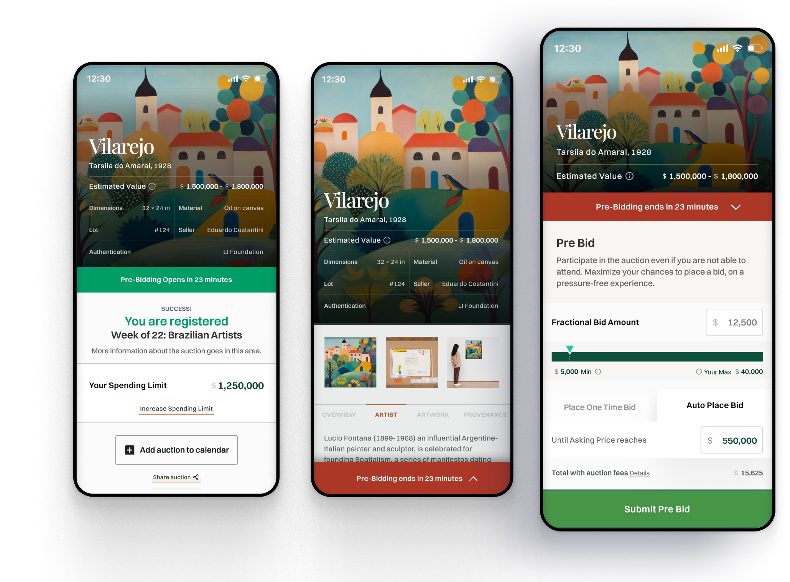
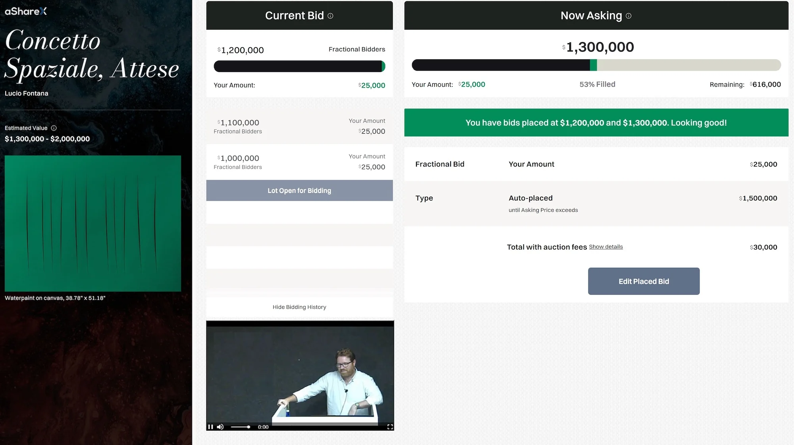

00 · Context and Background
Principal PM at InfoBeans, embedded with the aShareX founding team
I'm Chris Pennell, a Product Manager and UX Lead with 10+ years building digital products across healthcare, wellness, and financial services, currently completing my MBA at Rice University. On this project I was Principal PM at InfoBeans, a product development consultancy, working directly with aShareX founder and CEO Alan Snyder and his team.
I owned the full product lifecycle: user research planning and execution, roadmap definition, backlog prioritization, and agile delivery across engineering and design. The core challenge was that fractional art auction mechanics are genuinely novel — there was no existing playbook to follow, and every assumption about how users would behave had to be tested in live pilot auctions.
My scope
Research-to-delivery ownership. I led user interview planning, ran post-pilot synthesis sessions, prioritized the backlog based on research findings, and drove agile ceremonies across the distributed team.
The north star: a first-time fractional bidder should feel comfortable enough to bid in their first auction and confident enough to come back for the next one.
The product context
aShareX built a platform where investors can bid fractional amounts on high-value artworks at live auctions. A $5,000 fractional bid on a $2M Basquiat gets you proportional ownership alongside other fractional and full bidders competing in real time.
The model was novel enough that users didn't have mental models to draw on. Trust, education, and emotional comfort mattered more than technology. The research confirmed this early and shaped every product decision from there.
01 · Problem and Product Hypothesis
Fine art investing was a closed club. Technology alone wasn't going to open it.
The market problem was straightforward: museum-quality art appreciates, generates cultural value, and has historically outperformed other asset classes over long periods. But buying a Basquiat or a Fontana required millions of dollars upfront and access to the right auction houses. Everyday investors were entirely locked out.
aShareX's thesis was that fractional bidding mechanics could democratize access. My job was to figure out what the digital experience needed to look like for that thesis to hold with real users, not just in theory.
Fine art investing required millions of dollars and insider access
Traditional art auctions at Christie's or Sotheby's are physically and financially inaccessible to everyday investors. The minimum buy-in for a significant work is well beyond what most people can allocate to a single asset.
Fractional bidding was unfamiliar and anxiety-inducing for new users
Users had no mental model for how fractional auction mechanics worked. Pilot research showed that anxiety about making mistakes in a real-money, real-time auction was the primary barrier to first participation.
Fast auction pacing created stress that prevented fractional bidders from engaging
Full bidders could make a single large commitment and step back. Fractional bidders needed to make multiple decisions across multiple lots in a fast-moving live auction. The pacing created a cognitive load that was pushing users out of the flow.
Going-in hypothesis
We believe that letting people buy small pieces of expensive art through a simple, guided auction will allow us to achieve broader access and fair pricing for everyday investors, and we will know this is true if first-time users feel comfortable bidding, successfully complete an auction, and come back to invest again.
What we got wrong: We assumed better technology would drive adoption on its own. The pilot showed that trust, investor education, and emotional comfort mattered more than the technical mechanics. The technology had to serve those needs, not just function correctly.

Pre-auction listing view: artwork details, estimated value, lot information, and auction registration — designed to build investor confidence before bidding begins
Missing source image: how fractional bidding works
The original HTML references asharex-how-it-works.png, but that PNG was not included with the downloaded file.
How fractional bidding works: create account, register for auctions, bid your amount, compete alongside full bidders, receive shares in the asset

User research synthesis: key findings from pilot interviews that shaped the product direction, including the trust and education gap and the demand for pre-auction simulation
02 · Research and Agile Delivery
Four live pilot auctions, each generating findings that fed directly into the next sprint
I structured the engagement as a continuous research loop: pilot auction, user interviews post-auction, synthesis and prioritization, sprint planning, ship, repeat. Each of the four pilot auctions ran with 30+ participants and generated both quantitative engagement data and qualitative feedback from post-session interviews.
Research findings were synthesized after each pilot and presented to the aShareX founding team and InfoBeans engineering leadership with a prioritized recommendation on what to build next. Nothing went into the sprint backlog without a research rationale attached to it.
What I did
- Planned and ran post-auction user interviews with fractional and full bidders across all four pilot sessions
- Synthesized behavioral data and qualitative findings into prioritized product recommendations presented to the CEO and engineering lead
- Ran agile ceremonies across engineering and design: sprint planning, backlog grooming, daily standups, and retrospectives
- Acted as single point of accountability between the aShareX founding team and the InfoBeans delivery team
Key research findings
- 63% of fractional bidders requested a pre-auction simulation to familiarize themselves with the interface before bidding real money
- 85% of fractional users wanted less manual pressure in fast-moving auctions. The speed created stress that broke their focus
- Trust and education were bigger adoption drivers than any specific feature. First-time users needed to understand the mechanic before they could engage with the product
- 64% consecutive bucket participation confirmed that once users were engaged, they stayed engaged across multiple lots

Pre-bid desktop view: auction schedule, lot details, and registration flow before a live auction begins

Test Drive an Auction: a simulation mode that let users practice bidding strategies against computer-generated competitors before committing real money. Recommended and scoped after 63% of pilot participants requested a pre-auction familiarization option.

Live auction interface: real-time bid updates, fill percentage, bidding history, and auctioneer view — all synced during a live event
03 · The Hardest Call
85% of users wanted auto-bidding. The CEO preferred manual bidding. The data won.
The auto-bidding decision was the defining product call of this engagement. It required presenting a recommendation that directly contradicted the founder's preference, backed by usability data that made the case quantitatively.
The situation
Fractional bidders were struggling to keep up with the auction pacing. They needed to make multiple decisions across multiple lots in real time while monitoring the current bid, their remaining allocation, and the next asking price. The stress was measurable: users were dropping out mid-auction rather than continuing to bid.
My recommendation
I presented the pilot data to the aShareX CEO and founding team: 85% of fractional users explicitly wanted less manual pressure. I recommended adding auto-bidding as an option, letting users set a maximum amount and let the system place bids on their behalf. I framed this as expanding choice, not removing manual bidding for users who preferred it.
The outcome
Auto-bidding was added. Fractional bidder engagement increased approximately 15% in the subsequent pilot. Users who enabled auto-bidding averaged 3.2 auto-bids per auction, confirming they were using it as an active strategy tool rather than a passive set-and-forget feature. The CEO's concern about losing the manual bidding experience proved unfounded — both options coexisted.
The principle: Research that contradicts a founder's instinct is more valuable than research that confirms it. The job is to present the data clearly and let it do the work.

Stakeholder workshop session: aligning the founding team and InfoBeans engineers on product direction before making the auto-bidding recommendation

The auto-bidding UI: users choose between a one-time bid at asking price or an auto-placed bid that continues until the asking price exceeds their maximum. The feature was added after pilot data showed 85% of fractional users wanted less manual pressure.

Secondary live auction view showing real-time bid tracking, auto-bid status, and fill percentage across the fractional pool
04 · Outcomes and Engagement Data
Four pilots, one key product decision, and the metrics that validated it
Across four test pilots, I tracked four engagement metrics designed to measure whether users were genuinely engaged with the auction experience or just present. The metrics were defined before the first pilot ran, so each subsequent auction could be measured against the same baseline.
| Metric |
Result |
What it shows |
| Consecutive Bucket Participation |
64% |
Most users didn't stop after one lot. High engagement; users were staying in the experience across multiple lots. |
| Avg. Auto-Bids per Bidder |
3.2 |
Auto-bidding was used as an active strategy tool, not a passive set-and-forget. Users were engaged, not checked out. |
| Limit Bid Re-up Rate |
42% |
Users actively increased their limits when outbid, showing high purchase intent and willingness to compete. |
| Avg. Bid Speed Post-New Bucket |
4.8 sec |
Fast reaction times confirm the UI kept users in the flow. No confusion or hesitation when a new lot opened. |
~15%
Fractional bidder engagement lift
After auto-bidding launched. Measured across pilot cohorts before and after the feature shipped.
63%
Users who requested pre-auction simulation
Validated the Test Drive an Auction feature before a line of code was written. Research confirmed the need; engineering built to spec.
4
Pilot auctions run iteratively
Each with post-session research, synthesis, and a prioritized recommendation for the next sprint. No build decisions made without data.
32
Pilot participants across segments
17 full bidders and 15 fractional bidders. Segmented analysis identified different needs and informed separate UX treatments for each group.
05 · Reflection
What building a novel financial product with no existing playbook taught me
aShareX was the most genuinely novel product problem I've worked on. There was no direct competitive benchmark, no established user mental model, and no prior research to draw on. Every assumption had to be tested in live conditions with real money. That environment clarified which skills matter most when you're building something that doesn't exist yet.
What went well
Research-driven iteration kept the product honest
Running user interviews after every pilot auction and feeding findings directly into sprint planning meant we weren't building on assumption. The auto-bidding decision is the clearest example: the data made a case the founder couldn't argue with because it was quantitative and specific.
Defining metrics before the first pilot
Setting the four engagement KPIs before pilot one meant every subsequent auction could be measured against the same baseline. Without pre-defined metrics, pilot data becomes anecdotal. With them, it becomes a sprint brief.
Iterative agile cycles matched the discovery pace
The weekly sprint cadence, with Monday planning and Friday retros, created a rhythm where research findings from one auction could become shipping features by the next one. That speed was only possible because the process was disciplined.
What I'd do differently
Establish a data instrumentation strategy before pilot one
Several behavioral metrics that would have been valuable to track in pilot one weren't instrumented until pilot three. Setting up analytics architecture before the first live auction would have produced a richer longitudinal dataset.
Introduce auto-bidding earlier in the pilot sequence
The stress that fractional bidders experienced in manual bidding was visible in pilot one. The data to support auto-bidding was available by pilot two. We shipped it in pilot three. Earlier action would have improved the participant experience across more pilots.
Build automated regression tests for real-time UI state
Live auction UIs have complex real-time state: fill percentages, bid history, lot transitions, auto-bid confirmations. Manual QA on these state changes under live conditions was time-consuming. Automated regression tests specifically for UI state transitions would have freed up significant engineering capacity.